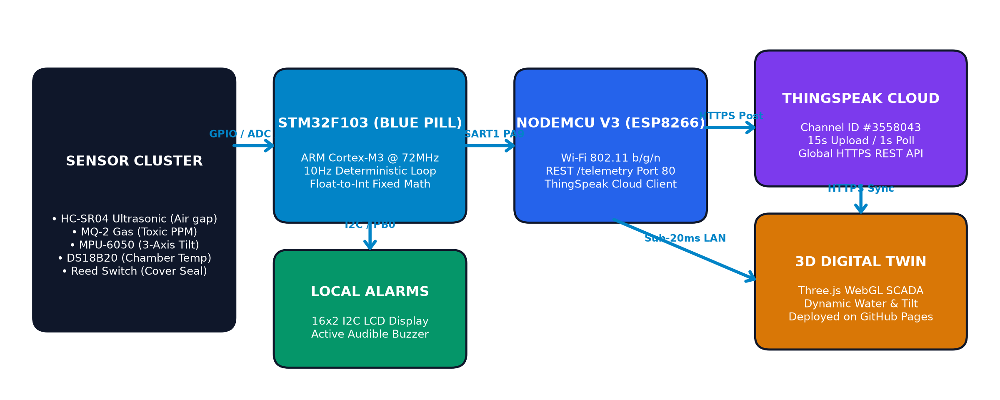
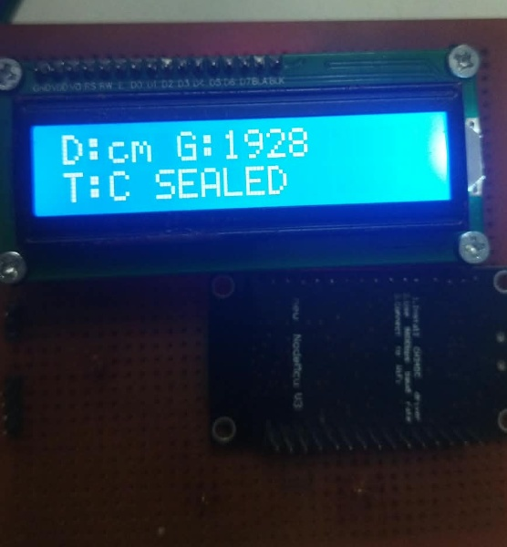
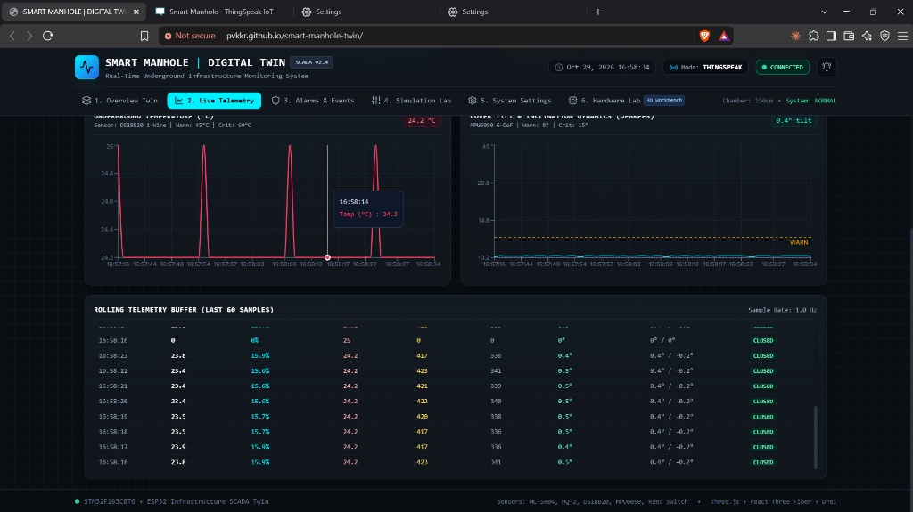
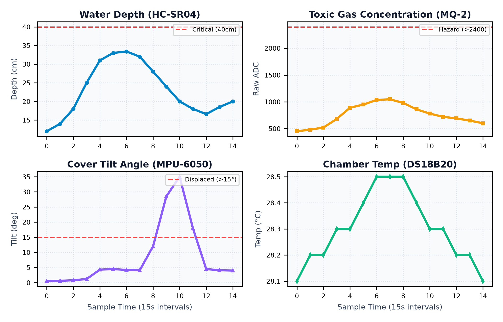

BATCH 8
GROUP P077
2400040006
P V Kishor Kumar Reddy
2400040004
T Perumal
2400040303
Chundu Uday Sai
2400040339
Ayan Chowdhury
1. SYSTEM ARCHITECTURE & END-TO-END TELEMETRY PIPELINE

2. HARDWARE PROTOTYPE & 3D DIGITAL TWIN SCADA INTERFACE

Physical Hardware Circuit: 16x2 LCD + NodeMCU V3 + STM32 Core

Live 3D Digital Twin: Physics-accurate water level & lid tilt dynamics
3. MULTI-SENSOR LIVE TELEMETRY & FIELD VERIFICATION

Real-Time Multi-Sensor Telemetry Graphs (ThingSpeak Channel #3558043)
Key Project Objectives:
- Flood Pre-emption: HC-SR04 ultrasonic continuous water surcharge sensing.
- Worker Safety: MQ-2 toxic sewer gas alarm threshold (ADC >2400).
- Anti-Tamper & Theft: MPU-6050 3-axis tilt + Reed switch cover seal.
Engineering Bottlenecks Solved:
- ARM Float Fix: Replaced nano.specs float stripping with integer math (%d.%d).
- I2C Lockup: Eliminated bus freeze with strict I2C_Stop & restart settle.
- Zero Latency: Sub-20ms local REST (/telemetry) + 1s ThingSpeak cache-bust.
Hardware & Safety Interfacing:
- Dual Core: STM32 deterministic bare-metal loop + NodeMCU ESP8266.
- Echo Voltage Divider: 1kΩ/2kΩ circuit safeguarding STM32 PA2 pin.